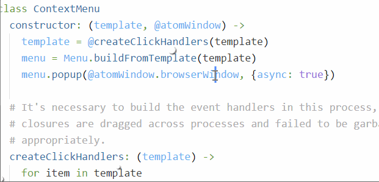
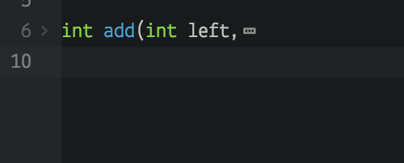
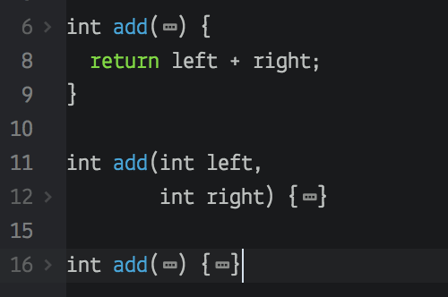
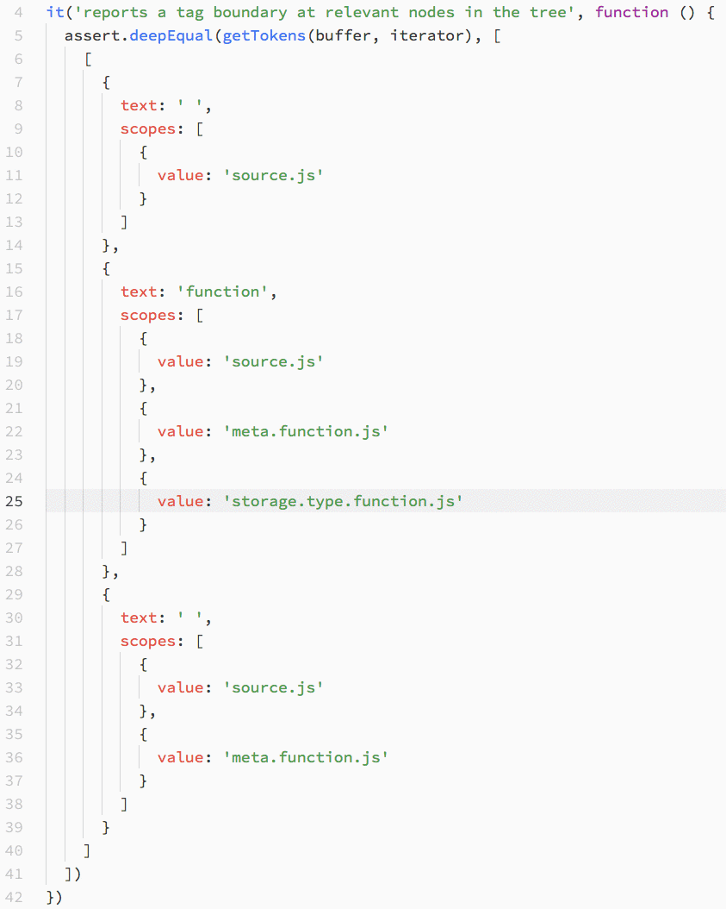

Atom 1.24
February 13, 2018 smashwilson
Tweet

Atom 1.24 has been released on our stable channel and includes read-only TextEditors, asynchronous context menus, and automatic scrolling on folding and unfolding.
Read-only TextEditors
Packages can apply a readonly attribute to TextEditors to disable input. This is useful when you wish to display code with syntax highlighting and allow copying to the clipboard, but it doesn’t make sense for the user to be able to change it, for example because it’s code in your git history or it isn’t on your local drive.
<atom-text-editor readonly />
editorElement.setReadOnly(true)
Context menus are now asynchronous
Right-clicking no longer locks up the event loop! Context menus are asynchronous, allowing other processing and rendering to occur while the menu is shown.

New LanguageMode API
The mechanism by which editors are tokenized for syntax highlighting and folding is changing soon. To prepare for this, the existing APIs that deal with configuring a grammar on an editor are being altered, and the first of these changes are included in Atom 1.24.
Rather than calling .setGrammar(grammar) on an editor:
const grammar = atom.grammars.grammarForScopeName('source.js')
editor.setGrammar(grammar)
Assign a language mode to the underlying buffer on the atom.grammar registry:
const buffer = editor.getBuffer()
atom.grammars.assignLanguageMode(buffer, 'source.js')
Additionally:
-
atom.grammars.autoAssignLanguageMode(buffer)will deduce a language mode for a buffer based on its file extension and current contents. -
atom.grammars.maintainLanguageMode(buffer)will assign the buffer a deduced language mode and continue to update it as the buffer’s file path changes or as additional language packages are loaded.
The Grammar-specific APIs continue to work for backwards compatibility, but will be deprecated at some point in the future.
Automatic scrolling when folding or unfolding
Folding or unfolding large blocks of code could easily move your cursor off screen. Now, Atom will automatically scroll the editor to keep your cursors visible after the folding operation is complete.
Don’t forget to check out all the other improvements shipping with this version in the release notes! 
Atom 1.25 Beta

Electron upgrade
Electron has been upgraded to 1.7.11. See the Electron release for more information.
Improved syntax highlighting and code folding
Syntax highlighting and code folding is about to be revamped substantially. A brand-new incremental parsing system called tree-sitter has been in development for some time, and it’s available for testing in beta today. Tree-sitter grammars exist today for JavaScript, TypeScript, Python, C, C++, Go, and Bash.
Tree-sitter is currently disabled by default. If you want to give it a shot, enable the “Use Tree Sitter Parsers” setting in Atom’s core settings.
To give a taste of what’s possible with tree-sitter grammars, code folds are currently based entirely on indentation. It’s a decent heuristic, but falls apart in more complex situations. Consider this function signature, and the way it folds today:
int add(int left,
int right) {
return left + right;
}

With tree-sitter, it can be folded more usefully:

As another example, tree-sitter lets you expand and contract selections by syntax nodes:

Python and HTML language improvements
The Python and HTML language packages got some love this release. When editing Python source, the tokenizer now supports function annotations, async functions, string formatting, f-strings, and binary strings. Within HTML documents, style attributes are tokenized as CSS.
GitHub package
The GitHub package allows you to stage and view changes involving file mode changes and changes to symbolic links. Furthermore, the diff view no longer resets its scrolling position when you don’t want it to.
There is also a new configuration setting that controls whether or not commit messages composed within the mini editor are hard-wrapped to 72 columns. Commit messages composed in a full-pane editor continue to be preserved as-is.
Performance and Responsiveness
The atom --wait command will now open files in existing Atom windows. This makes Atom more useful for tasks like editing commit messages, where the editor must block until a file is closed. Try using atom-beta --wait as your GIT_EDITOR today!
“Confirm” and “save” dialogs launched with the Atom API may now be asynchronous. Internal callers have been updated, but note that package authors will need to opt-in to the asynchronous forms of both by providing callback arguments.
// Asynchronous atom.confirm()
atom.confirm({
message: 'Click yes to win',
buttons: ['Yes', 'No']
}, response => {
if (response === 0) {
console.log('YOU WIN!')
} else {
console.log("Well well aren't we contrary")
}
})
// Asynchronous showSaveDialog()
atom.getCurrentWindow().showSaveDialog({
title: 'Save File',
defaultPath: process.cwd()
}, chosenPath => {
console.log(`Successfully saved to ${chosenPath}.`)
})
There are many more details in the release notes.
Get all these improvements today by joining the Atom Beta Channel!